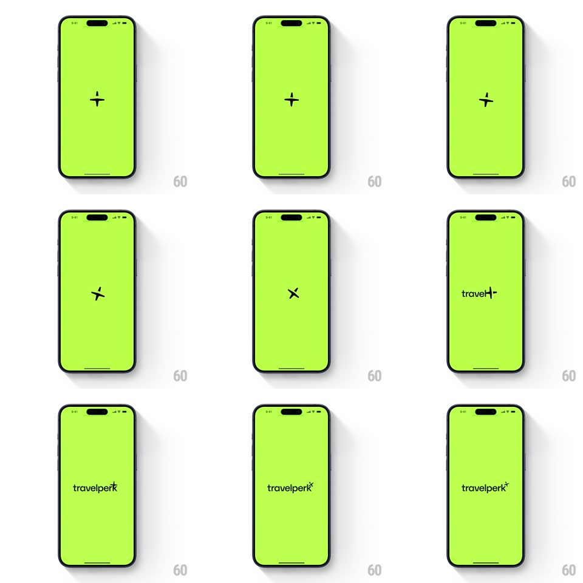

Media
Frame-by-frame

Rebuild this animation 1:1: TravelPerk's splash - a dark cross on the lime screen rotates into an X as it expands, then settles as the mark on the "travelperk" wordmark.

Rebuild this animation 1:1: TravelPerk's splash - a dark cross on the lime screen rotates into an X as it expands, then settles as the mark on the "travelperk" wordmark. ## Integration Integration: stack-agnostic spec - springs given as stiffness/damping, timed motions as duration + curve; map every value to your framework and animation library of choice. ## Scene Full-screen lime green with a small dark cross at center. End state: the "travelperk" wordmark at center with the cross riding as the superscript mark at its top right. ## Motion spec Pattern: rotating mark reveal, ~1.2s. - Intro: the cross fades in at center (200ms) and holds 300ms. - Rotation: the cross rotates 0 -> 45deg into an X (400ms, ease-in-out) while scaling up 1 -> 1.6. - Expansion: the X continues growing and drifting toward its final mark position (350ms, ease-out). - Wordmark: "travelperk" fades in letter by letter (30ms stagger, 300ms) as the X docks onto its superscript spot with a small settle (spring ~380/20, 200ms). ## Calibration - One continuous rotation - the cross never flips or mirrors. - The green field is flat and static; all motion lives in the mark and type. ## Reduced motion The wordmark with its mark fades in (300ms). ## Don't miss - The cross becomes the logo mark - it is the same element, repositioned and scaled. - The wordmark appears only after the rotation completes.